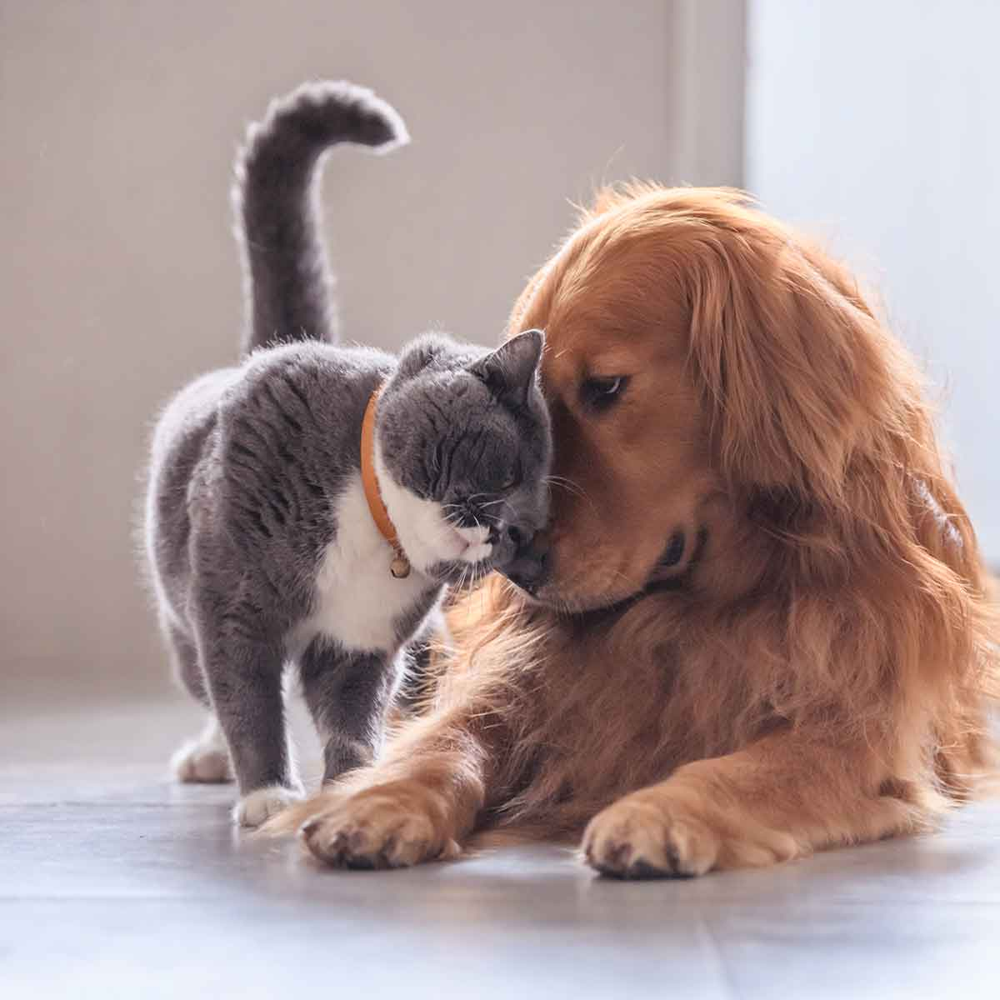

Somos Ricocan y Ricocat, un espacio dedicado al cuidado y bienestar de los animales. Nos gusta compartir información para ayudar a las personas a cuidar mejor a sus mascotas.

Somos Ricocan y Ricocat, un espacio dedicado al cuidado y bienestar de los animales. Nos gusta compartir información para ayudar a las personas a cuidar mejor a sus mascotas.

Promover el cuidado responsable de perros y gatos, compartiendo consejos sobre su alimentación, salud y bienestar.